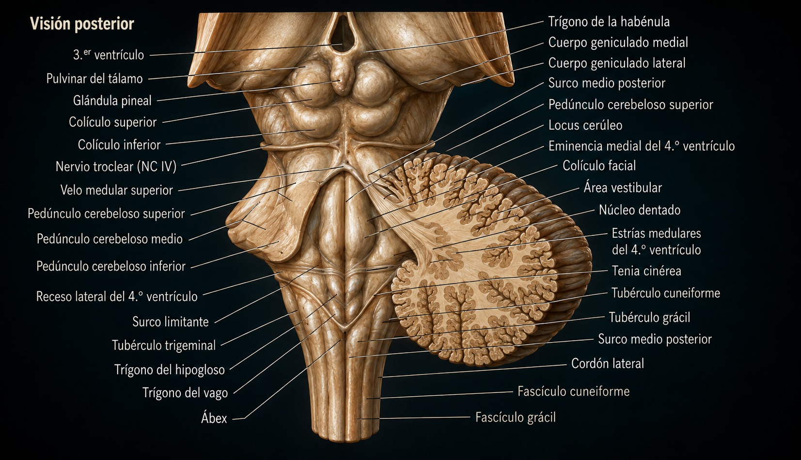
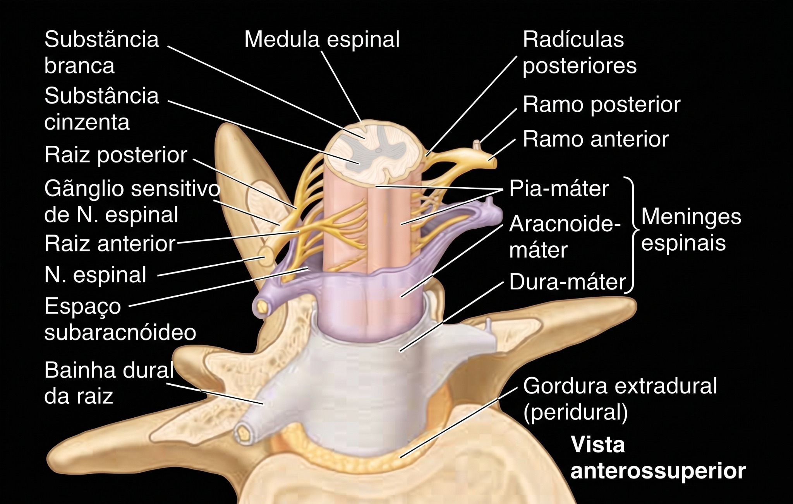
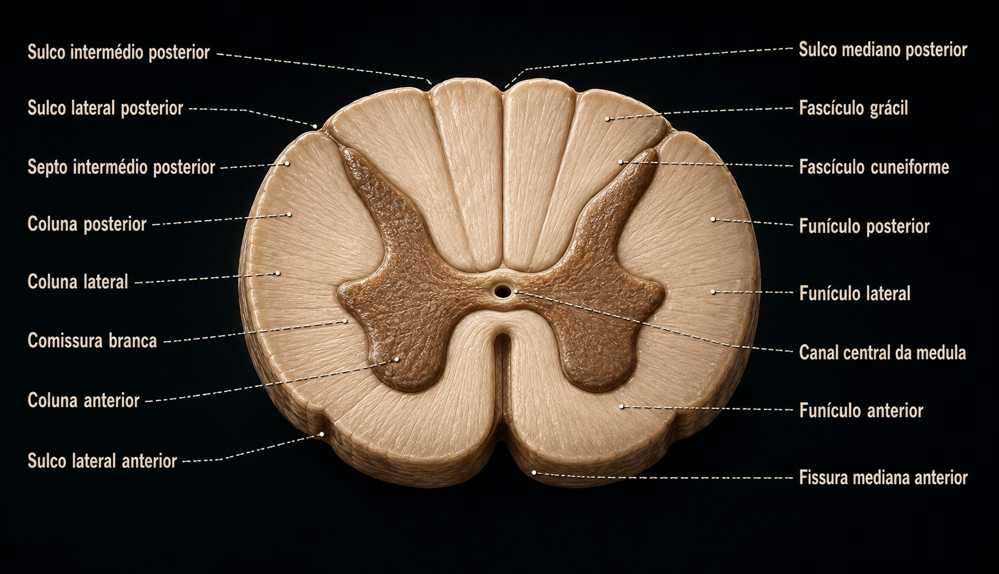
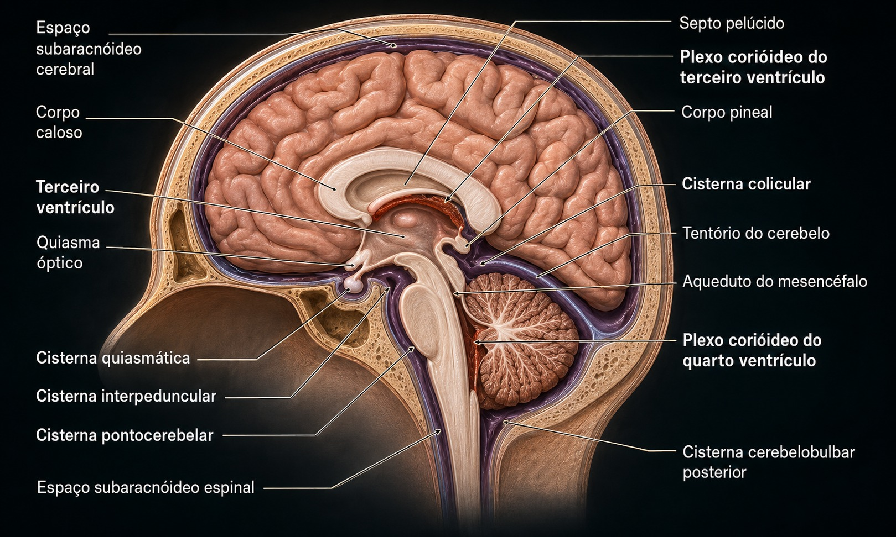
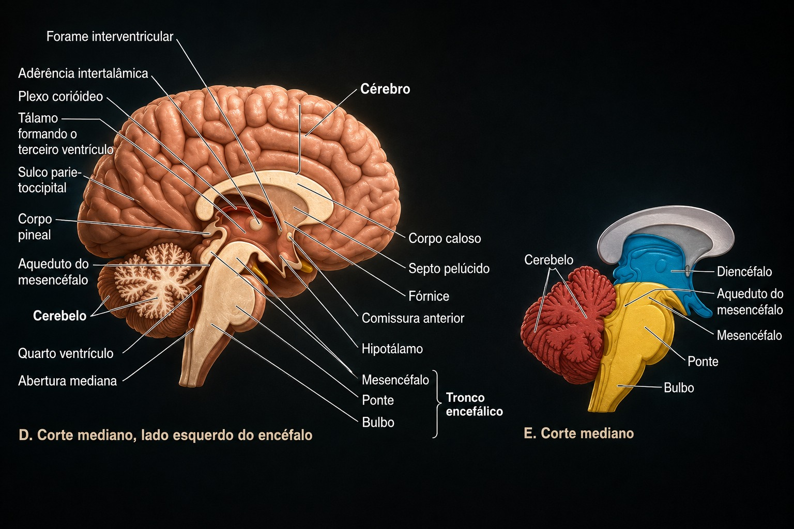
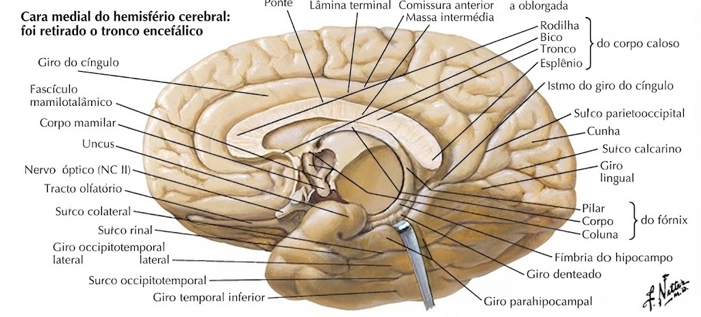

Atlas anatômico digital e caderno de laboratório
Explore o roteiro, identifique estruturas, registre observações e fotografias e acompanhe seu progresso.
Organização do Sistema Nervoso
Medula Espinal
Situada no canal vertebral, mede aproximadamente 45 cm, no adulto; cranialmente limita-se no bulbo, ao nível do forame magno, e seu limite caudal situa-se geralmente ao nível da 2ª vértebra lombar (L2). Em corte transversal da medula, identifique: fissura mediana anterior; substância cinzenta — coluna anterior, coluna posterior e coluna lateral (T1 a L2); canal central da medula; substância branca — funículo anterior, lateral e posterior.
Tronco Encefálico
Interpõe-se entre a medula e o diencéfalo, situando-se ventralmente ao cerebelo. Bulbo: forma de cone, cuja extremidade menor continua caudalmente com a medula espinal. Na face ventral: pirâmides. Na face dorsal: IV ventrículo. Ponte: situada entre o bulbo e o mesencéfalo. Identifique pedúnculos cerebelares médios, sulco basilar e sulco bulbopontino. Mesencéfalo: conecta o cérebro à ponte. Identifique aqueduto do mesencéfalo, pedúnculos cerebrais e colículos superiores e inferiores.
Cerebelo
Em visão póstero-superior: vérmis e hemisférios cerebelares direito e esquerdo. Em secção mediana: corpo medular do cerebelo (substância branca) e córtex cerebelar (substância cinzenta).
Diencéfalo
Em encéfalo com corte mediano: tálamo, sulco hipotalâmico, aderência intertalâmica, hipotálamo e epitálamo.
Telencéfalo
Em cérebro inteiro: fissura longitudinal e hemisférios direito e esquerdo. Reconheça sulco lateral e sulco central; lobos frontal, temporal, parietal, occipital e ínsula. Lobo frontal: sulco pré-central, sulcos frontal superior e inferior, giro pré-central, giro frontal inferior e área de Broca. Lobo temporal: giro temporal superior, sulco temporal superior, giro temporal médio, sulco temporal inferior, giro temporal inferior e giro temporal transverso anterior (área auditiva primária). Lobo parietal: sulco pós-central, giro pós-central e área somestésica primária; área gustativa primária na porção inferior do giro pós-central, próxima à ínsula. Face medial: corpo caloso; no occipital, sulco calcarino e área visual primária; no frontal, giro do cíngulo. Face inferior temporal: úncus, giro para-hipocampal e área olfatória primária. Face inferior frontal: bulbo olfatório, trato olfatório e nervo olfatório (I). Na face inferior do encéfalo: nervo óptico (II).
Nervos Espinhais
31 pares: 8 cervicais, 12 torácicos, 5 lombares, 5 sacrais e 1 coccígeo. Identifique raiz ventral do nervo espinal e raiz dorsal do nervo espinal (gânglio dorsal).
Sistema Ventricular
Identifique os ventrículos encefálicos. Trajeto do líquor: ventrículos laterais → forame interventricular → III ventrículo → aqueduto do mesencéfalo → IV ventrículo → espaço subaracnóideo → granulações aracnóideas → reabsorção → sistema venoso.
Meninges
Observe como dura-máter, aracnoide e pia-máter envolvem o tecido nervoso no encéfalo e na medula. Espaço subdural: entre dura-máter e aracnoide. Espaço subaracnóideo: entre aracnoide e pia-máter, contendo líquor e comunicando encéfalo e medula. Espaço extradural: entre dura-máter e periósteo do canal vertebral, com tecido adiposo e veias; não existe nesse formato no nível craniano.
Nervos Cranianos
| Nº | Nervo | Função | Componentes |
|---|---|---|---|
| I | Olfatório | Olfato | Sensitivo |
| II | Óptico | Visão | Sensitivo |
| III | Oculomotor | Motricidade dos músculos ciliares, esfíncter da pupila e músculos extrínsecos do bulbo do olho, exceto os relacionados a IV e VI | Motor |
| IV | Troclear | Motricidade do músculo oblíquo superior do bulbo do olho | Motor |
| V | Trigêmeo | Mastigação; sensibilidade da face, seios da face e dentes | Sensitivo e motor |
| VI | Abducente | Motricidade do músculo reto lateral do bulbo do olho | Motor |
| VII | Facial | Mímica facial; gustação no terço anterior da língua | Sensitivo e motor |
| VIII | Vestibulococlear | Orientação/movimento e audição | Sensitivo |
| IX | Glossofaríngeo | Gustação no terço posterior da língua; sensibilidade da faringe, laringe e palato | Sensitivo e motor |
| X | Vago | Sensibilidade de orelha, faringe, laringe, tórax e vísceras; inervação visceral | Sensitivo e motor |
| XI | Acessório | Controle motor da faringe, laringe, palato, esternocleidomastoideo e trapézio | Motor |
| XII | Hipoglosso | Motricidade dos músculos da língua, exceto palatoglosso | Motor |
Atlas Prático
As 12 imagens enviadas estão incorporadas ao aplicativo. Toque em uma imagem para ampliar.





